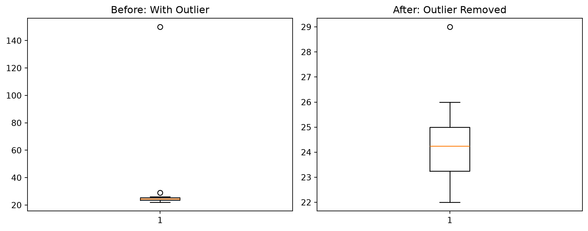

Filling missing values (imputation) is the process of intelligently replacing blank data points with estimated numbers.
It exists because most machine learning algorithms will crash immediately if they encounter a missing value (NaN). You cannot train a model on “blank”.
Tip🧠 Analogy — The Missing Puzzle Piece
The everyday thing: Doing a jigsaw puzzle with a missing piece.
The mapping: - The puzzle is your dataset. - The missing piece is the NaN value. - Imputation is painting a piece of cardboard to match the surrounding colors so the picture looks complete from a distance.
Where it breaks down: An imputed value is just a good guess. In data science, guessing wrong can ruin your model’s accuracy.
5.1.1 How it works
When faced with a missing value, you have three main choices: 1. Drop the row: If only 1% of rows are missing data, just delete them. 2. Fill with Mean/Median: If a user’s age is missing, fill it with the average age of all users. 3. Forward Fill (Time Series): If Monday’s stock price is missing, just copy Sunday’s price.
5.1.2 📘 Examples
Example 1 — Filling NaN with the mean in Pandas
import pandas as pdimport numpy as npdf = pd.DataFrame({"Age": [25, 30, np.nan, 40, 20]})print("Before:\n", df)# Calculate the mean (average)mean_age = df["Age"].mean()# Fill the NaN with the meandf["Age"] = df["Age"].fillna(mean_age)print("\nAfter:\n", df)
Before:
Age
0 25.0
1 30.0
2 NaN
3 40.0
4 20.0
After:
Age
0 25.00
1 30.00
2 28.75
3 40.00
4 20.00
5.1.3 ❓ MCQs
Q1. Why is deleting rows with missing values not always the best strategy?
Because it takes too much processing power.
Because if 40% of your data has missing values, deleting those rows destroys almost half of your valuable information.
Because Pandas does not have a function to delete rows.
NoteAnswers
A1 — (b). Deleting is easy, but it destroys data. Imputation (filling) preserves the row so you can still learn from its other valid columns.
5.2 2. Smoothing noisy data
Smoothing is the mathematical process of removing random, short-term fluctuations to reveal the true underlying trend.
It exists because sensors glitch, human input varies, and daily variance can obscure the bigger picture.
5.2.1 How it works
The most common technique is the Moving Average. Instead of looking at daily sales, you look at the 7-day rolling average. This flattens out the weekend dips and shows if the business is generally growing or shrinking.
Warning⚠️ The trap of over-smoothing
If you smooth the data too much (e.g., using a 365-day moving average on stock prices), you erase the very trends you are trying to study. The data becomes a flat line.
6 Part B — Detecting Outliers
Outliers are extreme data points that do not follow the pattern of the rest of the data.
6.1 3. Detecting and removing outliers
Outlier removal is the process of identifying mathematically impossible or highly improbable numbers and deleting them.
It exists because a single extreme outlier can pull the mathematical average so far in one direction that the model becomes useless. If you put Elon Musk in a room with 99 teachers, the “average” income of that room is suddenly $2 billion. That average does not represent the teachers.
6.1.1 How it works
We detect outliers visually using a Boxplot. A boxplot draws a box around where 50% of your data lives. Anything that falls far outside the “whiskers” of that box is mathematically flagged as an outlier.
6.1.2 ❓ MCQs
Q2. How does an extreme outlier affect a dataset’s average (mean)?
It has no effect.
It skews the average heavily toward the outlier, misrepresenting the majority of the data.
It causes the average to equal zero.
NoteAnswers
A2 — (b). This is why the Median is often used instead of the Mean when dealing with income or housing prices, as the Median is resistant to outliers.
7 Part Demo — The Cleaning Pipeline
Let’s build a mini-pipeline that replaces missing values and visually removes outliers.
import pandas as pdimport numpy as npimport matplotlib.pyplot as plt# 1. Create a messy datasetdata = {"Customer_Age": [22, 25, 24, np.nan, 23, 26, 22, 29, 150, 24, 25] # Notice NaN and 150}df = pd.DataFrame(data)# 2. Fill the missing value (NaN) with the median agemedian_age = df["Customer_Age"].median()df["Customer_Age"] = df["Customer_Age"].fillna(median_age)# 3. Visualize BEFORE removing the outlierplt.figure(figsize=(10, 4))plt.subplot(1, 2, 1)plt.boxplot(df["Customer_Age"])plt.title("Before: With Outlier")# 4. Remove the outlier (Keep only ages under 100)df_clean = df[df["Customer_Age"] <100]# 5. Visualize AFTER removing the outlierplt.subplot(1, 2, 2)plt.boxplot(df_clean["Customer_Age"])plt.title("After: Outlier Removed")plt.tight_layout()plt.show()

Figure 7.1: Using boxplots to detect and remove outliers.
8 🎯 Session 3 — Tasks
Task 1 — Moving Averages. Create a Pandas DataFrame with 10 days of random sales data. Look up the Pandas .rolling() function and use it to calculate a 3-day moving average. Report the difference between the raw daily sales and the moving average.